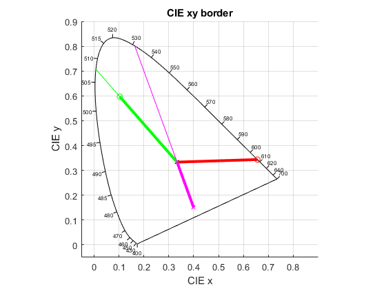

LDomPurity
Navigate to: Home | Alphabetic list | Grouped list | Source code: LDomPurity.m
Computes dominant wavelength and purity
Contents
Syntax
[ldom, purity] = LDomPurity(rhs, opts)
Input Arguments
- rhs: A valid spectrum (see IsSpectrum for what that is), or
- rhs: alternatively, a struct with fieldy x and y (a CIE 1931 color point), or
- rhs: alternatively, a double vector of length 2, interpreted as an x-y CIE 1931 color point
- opts: Name-value pair, 'E', E, where E is a double vector of length 2, interpreted as an x-y CIE 1931 color, or a struct with fieldy x and y. E is the center point from where the dominant wavelength is determined. Default is E = [1/3, 1/3].
Output Arguments
- ldom: scalar double: the dominant wavelength in nm. Negative when color point lies towards magenta line. 555 nm when color point coincides with white point within roundoff.
- purity: scalar double: the relative distance from the [1/3, 1/3] (or optional E) white point to the monochromatic border. Negative when colorpoint lies towards magenta line. Zero when color point coincides with white point within roundoff.
Algorithm
First, computes the angle of the line from white point to border, to see if that is towards the monochromatic border or towards magenta line. Then, finds that monochromatic wavelength whose border point leads to the same angle, by iterative root finding. The monochromatic border points are taken from the CIE standard in 1 nm steps. In between a 1 nm interval, linear interpolation is used.
See also
Usage Example
function ExampleLDomPurity() cie = CIE1931_Data(); xB = @(lam) interp1(cie.lam, cie.xBorder, lam); yB = @(lam) interp1(cie.lam, cie.yBorder, lam); red = GaussSpectrum(360:830, 620, 20); [ldomRed, purityRed] = LDomPurity(red); green = GaussSpectrum(360:830, 510, 20); [ldomGreen, purityGreen] = LDomPurity(green); fprintf('ldom = %g, purity = %g for red\n',ldomRed, purityRed); fprintf('ldom = %g, purity = %g for green\n',ldomGreen, purityGreen); PlotCIExyBorder(); hold on; scatter(1/3,1/3,'xk'); xyRed = CIE1931_XYZ(red); xyGreen = CIE1931_XYZ(green); scatter(xyRed.x, xyRed.y,'or'); plot([1/3,xyRed.x], [1/3, xyRed.y],'r','LineWidth',3); scatter(xyGreen.x, xyGreen.y,'og'); plot([1/3,xyGreen.x], [1/3, xyGreen.y],'g','LineWidth',3); plot([1/3,xB(ldomGreen)], [1/3, yB(ldomGreen)],'g'); % compute directly from xy vector [ldomMagenta, purityMagenta] = LDomPurity([0.4, 0.15]); % or compute from xy struct magenta_xy.x = 0.4; magenta_xy.y = 0.15; [ldomMagenta, purityMagenta] = LDomPurity(magenta_xy); scatter(magenta_xy.x, magenta_xy.y,'xm'); plot([1/3,magenta_xy.x], [1/3, magenta_xy.y],'m','LineWidth',3); plot([1/3,xB(-ldomMagenta)], [1/3, yB(-ldomMagenta)],'m'); fprintf('ldom = %g, purity = %g for magenta\n',ldomMagenta, purityMagenta); % now with nonstandard white point: CIE D65 D65 = CIE_Illuminant('D65'); D65XYZ = CIE1931_XYZ(D65); myE = [D65XYZ.x, D65XYZ.y]; [ldomGreen_D65, purityGreen_D65] = LDomPurity(green,'E',myE); fprintf('ldom = %g, purity = %g for green with D65 white point\n',ldomGreen_D65, purityGreen_D65); % sanity check cie = CIE1931_Data(); xy_green_pure = [interp1(cie.lam, cie.xBorder,ldomGreen_D65), interp1(cie.lam, cie.yBorder,ldomGreen_D65)]; xy_green = [xyGreen.x, xyGreen.y]; xy_D65 = [D65XYZ.x,D65XYZ.y]; % are they collinear? distance from point p0 to line p1-p2 is d_green_pure = xy_green_pure - xy_D65; d_green = xy_green - xy_D65; dist = d_green - (d_green * d_green_pure' / (norm(d_green_pure))^2) * d_green_pure; %ah = PlotCIExyBorder(); %plot(ah, [D65XYZ.x, xy_green_pure(1) ], [D65XYZ.y, xy_green_pure(2)]); %plot(ah, [D65XYZ.x, xy_green(1) ], [D65XYZ.y, xy_green(2)]); end
ldom = 607.113, purity = 0.999998 for red ldom = 507.557, purity = 0.705528 for green ldom = -531.109, purity = -0.841618 for magenta ldom = 508.147, purity = 0.688516 for green with D65 white point